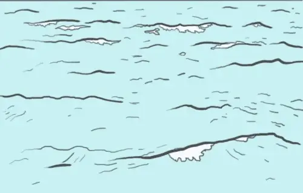

1. Les océans produisent environ 70% de l'oxygène que nous respirons.(Vrai)
2. Les récifs coralliens absorbent plus de CO2 que les forêts.(Faux)
3. Le phytoplancton est responsable de la majorité de l'oxygène produit par les océans.(Vrai)
1. La pompe thermohaline transporte de la chaleur et des nutriments à travers les océans, tout comme le sang dans le corps. (Vrai)
2. Les courants océaniques influencent uniquement les régions proches des côtes. (Faux)
3. La circulation océanique est essentielle pour maintenir un climat stable sur Terre. (Vrai)
1. La température des océans est uniforme partout. (Faux)
2. L'acidification des océans endommage leur "peau" en affectant la vie marine comme les coraux. (Vrai)
3. Une augmentation de la salinité accélère l'évaporation de l'eau des océans. (Vrai)
1. Les dauphins communiquent entre eux par des signaux sonores semblables aux nerfs qui transmettent des signaux dans le corps humain. (Vrai)
2. Les récifs coralliens n'ont aucun impact sur la communication entre les espèces marines. (Faux)
3. La pollution sonore dans les océans perturbe les interactions entre les espèces marines. (Vrai)
2. L’élimination des déchets plastiques n’a pas d’impact direct sur la santé des océans. (Faux)
1. Les mangroves et les récifs coralliens agissent comme une barrière protectrice contre les tempêtes, tout comme la peau protège le corps. (Vrai)
3. Le microplastique nuit à la capacité des océans à stocker le carbone. (Vrai)
1. Si les océans étaient un corps humain, ils contiendraient assez d'eau pour remplir environ 1 000 cœurs humains. (Faux – bien plus que ça !)
3. Les océans se réchauffent 10 fois plus vite que notre corps en cas de fièvre. (Faux – mais le réchauffement est rapide !)
2. Le bruit généré par un récif corallien en bonne santé peut être entendu à plusieurs kilomètres sous l’eau. (Vrai)